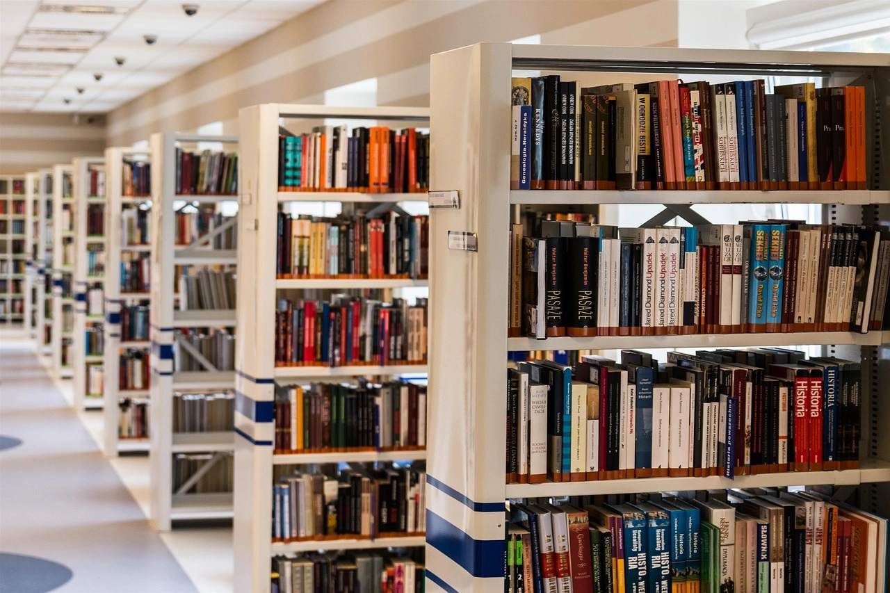
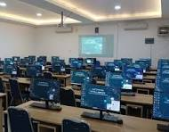
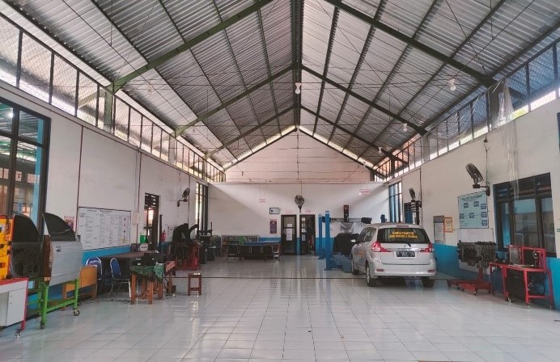

SMK Taruna Jaya Prawira |
|
| THE WINNER |
SMK Taruna Jaya Prawira SMKS Taruna Jaya Prawira (TJP) Tuban merupakan salah satu Sekolah Menengah Kejuruan swasta terbesar sekaligus sekolah pusat keunggulan rujukan nasional yang terletak di Kabupaten Tuban, Jawa Timur. Sekolah yang memiliki julukan "The Winner" ini mengusung visi untuk mencetak lulusan yang religius, unggul, mandiri, bermartabat, dan berwawasan lingkungan melalui kurikulum yang terintegrasi dengan kebutuhan industri. Lembaga pendidikan terakreditasi A ini menawarkan enam program keahlian unggulan di bidang teknologi dan rekayasa serta teknologi informasi, seperti Teknik Pemesinan, Teknik Kendaraan Ringan, Teknik Pengelasan, Teknik Instalasi Tenaga Listrik, Teknik Komputer Jaringan, serta Pengembangan Perangkat Lunak dan Gim.
Demi mendukung kompetensi siswanya, SMK TJP Tuban telah dilengkapi dengan fasilitas praktik berstandar industri modern, sistem Smart School berbasis digital, serta Lembaga Sertifikasi Profesi (LSP) berlisensi resmi BNSP. Berkat kualitas pendidikannya yang matang, sekolah ini telah mengukir berbagai prestasi gemilang baik di tingkat regional maupun nasional, termasuk melahirkan perwakilan siswa untuk ajang bergengsi seperti World Skills ASEAN. Melalui kerja sama yang erat dengan Dunia Usaha dan Dunia Industri (DUDI), para lulusan SMK TJP Tuban dipersiapkan secara maksimal agar siap langsung bekerja, berwirausaha, atau melanjutkan pendidikan ke jenjang yang lebih tinggi.
| No | Program Keahlian | Lama belajar |
|---|---|---|
| 1 | Teknik Pemesinan | 3 Tahun |
| 2 | Teknik Kendaraan Ringan | 3 Tahun |
| 3 | Teknik Pengelasan | 3 Tahun |
| 4 | Teknik Instalasi Tenaga Listrik | 3 Tahun |
| 5 | Teknik Komputer Jaringan | 3 Tahun |
| 6 | Pengembangan Perangkat Lunak dan Gim | 3 Tahun |
| Perpustakaan | Laboratorium komputer | Bengkel Praktik |
|---|---|---|
 |
 |
 |